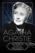
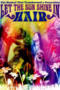
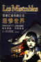
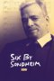

DOCUMENTALES DE TEATRO
THEATRE DOCUMENTARIES
THEATRE DOCUMENTARIES
| Portada Cover |
Titulo Title |
Año Year |
Idioma Language |
Formato Format |
Resolución Resolution |
Elenco Cast |
Notas Notes |
|---|---|---|---|---|---|---|---|
|  | Agatha Christie: 100 Years of Suspense | 2020 | EN | mp4 | 1080p | Agatha Christie, Nigel Havers | |
| The Andrew Lloyd Webber Story | 1986 | EN | mp4 | 480p | Andrew Lloyd Webber, Tim Rice, Harold Prince, Melvyn Bragg, Elaine Paige | ||
| Andrew Lloyd Webber: Tribute to a Superstar | 2018 | EN | mp4 | 480p | Andrew Lloyd Webber, John Legend, Glenn Close, Lin-Manuel Miranda | ||
 |
The Art of Imagination | EN | mp4 | 576p | |||
 |
Because of the Wonderful Things It Does | EN | mp4 | 576p | |||
| Being Poirot | 2013 | EN | mp4 | SD | David Suchet | ||
| Betty White: First Lady of Television | 2018 | EN | mp4 | 1080p | Betty White, Tina Fey, Carl Reiner, Ryan Reynolds, Jennifer Love Hewitt, Gavin MacLeod, Valerie Bertinelli, Valerie Harper, Georgia Engel, Alex Trebek, Millicent Martin, Tom Sullivan, Bob Stewart, Tyne Daly, Michelle Forbes, Sharon Gless, Linda Lavin, Justina Machado | ||
| Bob Fosse: It's Showtime! | 2019 | EN | mp4 | 1080p | Louise Redknapp, Will Young | ||
| Boulevard! A Hollywood Atory | 2021 | EN | mp4 | 1080p | Robert Osborne, Jeffrey Schwarz, Steve Hayes, Skip E. Lowe, Derrik Lewis, Barbara Fixx, Luke Yankee, David Del Valle, Mark Saltzman, Laurie Franks, Stephen Michael Shearer, Cari Beauchamp, Elizabeth Wyler, Stephen Bock, Steve Wilson, Brooke Anderson, Richard Leibell, Richard Wuerth, A. Chandler Warren Jr., Alan Eichler, Mike Wallace, Steve Allen, Gloria Swanson, Dickson Hughes, Richard Wyler | ||
| Broadway: Beyond the Golden Age | 2021 | EN | mp4 | 1080p | Jonathan Groff, Jason Alexander, Bea Arthur, Elizabeth Ashley, Alec Baldwin, Kaye Ballard, Renee Baughman, Andy Beu, Kelly Bishop, Denise Pence, Steve Boockvor, Candy Ann Brown, Carol Burnett, Marge Champion, Wayne Cilento, Glenn Close, Carole Cook, Michael Crawford, Arlene Dahl, Jeff Daniels, Ronald Dennis, Loretta Devine, André De Shields, Charles Durning, Fred Ebb, Nanette Fabray, Cy Feuer, Jane Fonda, Anthony Franciosa, Trish Garland, Troy Garza, Ben Gazzara, Joanna Gleason, Robert Goulet, Tammy Grimes, Robert Guillaume, Uta Hagen, Mitzi Hamilton, Julie Harris, Jerry Herman, Celeste Holm, Cady Huffman, Tab Hunter, Cherry Jones, John Kander, Lainie Kazan, Shirley Knight, Frank Langella, Elaine Paige, Baayork Lee, Sondra Lee, Frank Liebergall, Priscilla Lopez, Shirley MacLaine, Donna McKechnie, Amelia McQueen, Ann Miller, Liza Minnelli, Liliane Montevecchi, Robert Morse, James Naughton, Jack Noseworthy, Jerry Orbach, Ken Page, Janis Paige, Betsy Palmer, Estelle Parsons, Michon Peacock, Don Percassi, Don Pippin, Jane Powell, Hal Prince, Karen Prunczik, Sheryl Lee Ralph, Lee Roy Reams, Robert Redford, Charles Nelson Reilly, Debbie Reynolds, Wanda Richert, Chita Rivera, Mary Rodgers, Gena Rowlands, John Rubinstein, Eva Marie Saint, Liev Schreiber, Pamela Sousa, Tony Stevens, Charles Strouse, Elaine Stritch, Jane Summerhays, Tommy Tune, Dick Van Dyke, Ben Vereen, Betsy von Furstenberg, Thommie Walsh, Lesley Ann Warren, Susan Watson, Jane White, Sammy Williams, Walter Willison, Charlayne Woodard, Karen Ziemba | ||
| Broadway: The Golden Age | 2003 | EN | mp4 | 1080p | Edie Adams, Bea Arthur, Elizabeth Ashley, Alec Baldwin, Kaye Ballard, Betsy Blair, Tom Bosley, Carol Burnett, Kitty Carlisle, Carol Channing, Betty Comden, Barbara Cook, Carole Cook, Hume Cronyn, Arlene Dahl, Charles Durning, Fred Ebb, Nanette Fabray, Cy Feuer, Phil Ford, Betty Garrett, Ben Gazzara, Robert Goulet, Farley Granger, Adolph Green, Tammy Grimes, Uta Hagen, Julie Harris, Rosemary Harris, June Havoc, Jerry Herman, Mimi Hines, Al Hirschfeld, Celeste Holm, Sally Ann Howes, Kim Hunter, Jeremy Irons, Anne Jackson, Derek Jacobi, Lainie Kazan, John Kenley, Joan Kobin, Miles Kreuger, Martin Landau, Frank Langella, Angela Lansbury, Arthur Laurents, Carol Lawrence, Michele Lee, Hal Linden, Shirley MacLaine, Karl Malden, Frank Marino, Rick McKay, Donna McKechnie, Ann Miller, Liliane Montevecchi, Patricia Morison, Robert Morse, James Naughton, Patricia Neal, Phyllis Newman, Fayard Nicholas, Harold Nicholas, Jerry Orbach, Janis Paige, Don Pippin, Jane Powell, Hal Prince, John Raitt, Rex Reed, Elliott Reid, Charles Nelson Reilly, Diana Rigg, Chita Rivera, Tony Roberts, Mary Rodgers, Gena Rowlands, Eva Marie Saint, Marian Seldes, Vincent Sherman, Stephen Sondheim, Maureen Stapleton, Elaine Stritch, Tommy Tune, Leslie Uggams, Gwen Verdon, Betsy von Furstenberg, Eli Wallach, Fay Wray, Gretchen Wyler, Barbara Bel Geddes, Marlon Brando, Richard Burton, Bob Fosse, Carol Haney, Walter Kerr, Alan Jay Lerner, Frederick Loewe, Ethel Merman, Geraldine Page, Kim Stanley, Laurette Taylor, Ethel Waters, Walter Winchell | ||
| Cameron Mackintosh - The First 50 Years | 2021 | EN | mp4 | 720p | Cameron Mackintosh, Michael Ball, Christopher Biggins, Alain Boublil, Jon Jon Briones, Paule Constable, William Differ, Anthony Drewe, Richard Eyre, Maria Friedman, Sonia Friedman, Norm Lewis, Patti LuPone, Michael Le Poer Trench, Andrew Lloyd Webber, Julia McKenzie, Clarke Peters, Liz Robertson, Claude-Michel Schönberg, Stephen Sondheim, Charlie Stemp, George Stiles, Giles Terera, Robert Wankel, Nicholas Allott, Julie Andrews | ||
| Carol Channing: Larger Than Life | 2012 | EN | mp4 | SD | Carol Channing, Loni Anderson, Mary Jo Catlett, Marge Champion, Tyne Daly, Phyllis Diller, Betty Garrett, Tippi Hedren, Jerry Herman, Harry Kullijian | ||
| Castrato in Search of a Lost Voice | 2006 | EN | mp4 | 480p | Nicholas Clapton, Michael Maniaci, Joanna Wake | ||
| Company: Original Cast Album | 1970 | EN | mp4 | 480p | Stephen Sondheim, Hal Prince, Elaine Stritch, Dean Jones, Pamela Myers | ||
 |
The Day the Music Died: The Story of Don McLean's "American Pie" | 2022 | EN | mp4 | 1080p | Don McLean, Garth Brooks, Brian Wilson, Peter Gallagher, Buddy Holly, Ritchie Valens, The Big Bopper, Austin Brown, Rob Lundquist, Adam Rupp, Tim Foust, Adam Chance, Jencarlos Canela, Maffio, Jade Bird | |
| Dylan on Dylan | 2002 | EN | mp4 | SD | |||
| Edith Piaf Bonus | 2004 | EN | mp4 | 576p | |||
| Edith Piaf: A Passionate Life | 2004 | EN | mp4 | 576p | |||
| Édith Piaf: Sans Amour, on N'est Rien Du Tout | 2010 | FR | mp4 | 480p | |||
| Elaine Stritch: Shoot Me | 2013 | EN | mp4 | SD | Elaine Stritch, Tina Fey, Cherry Jones, Nathan Lane, James Gandolfini, Alec Baldwin, John Turturro, Harold Prince | ||
| Every Little Step | 2009 | EN | mp4 | 480p | Jason Tam, Charlotte d'Amboise, Tyler Hanes, Bob Avian, German Alexander, Michael Bennett, Baayork Lee, Nikki Snelson, Chryssie Whitehead | ||
 |
Evita Pre Madonna | EN | mp4 | 720p | |||
| Evita: The Making of a Superstar | 2018 | EN | mp4 | 1080p | Suzy Klein, Elaine Paige, Elena Roger, Tim Rice, Hal Prince | ||
 |
Faces of Elaine Paige | 1996 | EN | mp4 | 576p | Elaine Paige, Melvyn Bragg | |
| Fiddler: A Miracle of Miracles | 2019 | EN | mp4 | 1080p | Sheldon Harnick, Austin Pendleton, Chaim Topol, Lin-Manuel Miranda, Joel Grey, Harvey Fierstein, Fran Lebowitz, Josh Mostel | ||
| Fiddler's Journey to the Big Screen | 2022 | EN | mp4 | 1080p | Jeff Goldblum, Norman Jewison, John Williams, Chaim Topol, Rosalind Harris, Michele Marsh, Neva Small, Robert F. Boyle, Kenneth Turan, Sheldon Harnick | ||
|  | Hair, Let the Sunshine In | EN | mp4 | 480p | |||
| Harry Potter 20th Anniversary: Return to Hogwarts | 2022 | EN | mp4 | 1080p | Daniel Radcliffe, Rupert Grint, Emma Watson, Bonnie Wright, Matthew Lewis, Tom Felton, James Phelps, Oliver Phelps, Evanna Lynch, Helena Bonham Carter, Robbie Coltrane, Ralph Fiennes, Gary Oldman, Mark Williams, Alfred Enoch, Chris Columbus, Ian Hart, Jason Isaacs, J.K. Rowling, Alfonso Cuarón, David Yates, Mike Newell, David Heyman, Toby Jones | ||
| The Heat Is Back On: The Remaking of Miss Saigon | 2015 | EN | mp4 | 1080p | Dougie Mackie & David Dolman | ||
| The Heat Is On: The Making Of Miss Saigon (1989) | 1989 | EN | mp4 | 576p | Jonathan Pryce, Lea Salonga, Cameron Mackintosh, Claude-Michel Schönberg, Alain Boublil, Nicholas Hytner, William David Brohn, Richard Maltby, Jr., Bob Avian, David Caddick, Monique Wilson, Russ Eglin, John Napier, Alan Walker, David Hersey, Martin Koch | ||
| Hello, Dolly! Around The World | EN | mp4 | 480p | ||||
| Howard | 2018 | EN | mp4 | 1080p | Howard Ashman, Jeffrey Katzenberg, Alan Menken, Jodi Benson, Paige O'Hara, Roger Allers, Sarah Gillespie, Bill Lauch, Peter Schneider, John Musker, Gary Trousdale, Kirk Wise, Chris Montan, Don Hahn, Ron Clements, Mike Gabriel, Rob Minkoff, Glen Keane, Nancy Parent, Marvin Hamlisch, Divine, Jerry Orbach, Angela Lansbury, Ellen Greene, Jack Nicholson, Steve Martin, Will Smith | ||
| Imagine Andrew Lloyd Webber: Memories | 2018 | EN | mp4 | 720p | Andrew Lloyd Webber, Alan Yentob, Tim Rice, Harold Prince, Julian Lloyd Webber, Cameron Mackintosh, Sarah Brightman, Charles Hart, John Lill | ||
| Imagine Cameron Mackintosh: The Musical Man | 2017 | EN | mp4 | 480p | Cameron Mackintosh, Alan Yentob | ||
| Jesucristo Superstar: Un Hito en La Historia Del Musical Español | 2015 | ES | mp4 | 576p | |||
| Karrie on Phantom | 1998 | EN | mp4 | SD | |||
 |
L. Frank Baum - The Man Behind The Curtain | 2005 | EN | mp4 | 576p | Mark Bramhall, Gita Dorothy Morena, John Fricke, Robert A. Baum Jr., Michael Patrick Hearn, Christine Donovan | |
|  | Les Miserables Goes to China | EN | mp4 | 576p | |||
| Let's Have Lunch: Backstage at Sunset Boulevard | 2017 | EN | mp4 | 1080p | Michael Xavier, Glenn Close, Fred Johanson, Siobhan Dillon | ||
| Life After Tomorrow | 2006 | EN | mp4 | SD | Sarah Jessica Parker, Senta Moses, Martha Byrne, Jennine Babo, William Berloni, Theda Stemler Blackwood, Danielle Brisebois, Arlene Kulis Brothers, Dara Brown, Nancy Carson, Martin Charnin, Kristi Coombs, Molly Copsey, Michele de Cuir, Dana Dewes, Kim Fertman, Robyn Finn, Nicole Francis, Michele Graham, Mollie Hall, Alyssa Milano, Joanna Pacitti, Cameron Randall Phillips, Harve Presnell, Molly Ringwald, Rosanne Sorrentino, Julie Stevens, Kristen Vigard, Emily Rose Vigard-Pleis, Karen Maria Schleifer | ||
| The Life And Loves Of Oscar Wilde | 1988 | EN | mp4 | 576p | Martin Shaw, Merlin Holland | ||
 |
The Making of La Môme | FR | mp4 | 576p | |||
| Making of Beauty and the Beast | NL | mp4 | 576p |  |
The Making of By Jeeves | 2001 | EN | mp4 | 576p |
 |
The Making of Cats | 1998 | EN | mp4 | 480p | ||
| The Making of Chess | 1986 | EN | mp4 | 576p | |||
| Making of Dans Der Vampieren | 2010 | EN | mp4 | 480p | |||
| Making of Elisabeth | NL | mp4 | SD | ||||
| Making of Elisabeth | DE | mp4 | 576p | ||||
| The Making of Jesus Christ Superstar | 2000 | EN | mp4 | 576p | |||
 |
The Making of Jesus Christ Superstar Arena Tour | 2012 | EN | mp4 | 1080p | ||
| The Making of Joseph and the Amazing Technicolor Dreamcoat | 1999 | EN | mp4 | 576p | |||
| The Making of Love Never Dies | 2012 | EN | mp4 | 1080p | |||
| The Making of Martin Guerre: A Musical Journey | 2000 | EN | mp4 | 576p | |||
| The Making of Miss Saigon Manila | EN | mp4 | SD | ||||
| Making of Notre Dame De Paris | FR | mp4 | 480p | ||||
| Making of Sunset Boulevard | NL | mp4 | 576p | ||||
| The Making of Tanz Der Vampire | 1997 | EN | mp4 | SD | |||
| Making of the Sound Od Music Live | 2015 | EN | mp4 | SD | |||
 |
Making of the Wiz | EN | mp4 | 480p | |||
| Maria by Callas | 2017 | EN | mp4 | 1080p | María Callas, Joyce DiDonato, King Edward VIII, Wallis Simpson, Aristotle Onassis, Giovanni Battista Meneghini, Rudolf Bing, David Frost, Barbara Walters, Elvira de Hidalgo, Edward R. Murrow | ||
 |
Marvin Hamlisch: What He Did For Love | 2013 | EN | mp4 | 1080p | Marvin Hamlisch, Barbra Streisand, Steven Soderbergh, Idina Menzel, Tim Rice, Woody Allen, Ann-Margret, Quincy Jones, Carole Bayer Sager, Christopher Walken, Lucie Arnaz, John Lithgow, Melissa Manchester, Carly Simon | |
 |
Masterpiece Behind the Scenes | 2001 | EN | mp4 | 576p | ||
| Matt Lucas Dreams the Dream | EN | mp4 | 576p | ||||
| Memories Of Oz | 2001 | EN | mp4 | 576p | John Waters | ||
 |
Meredith Willson: America's Music Man | <2023/td> | EN | mp4 | 1080p | Sutton Foster | |
| La Môme en New York | FR | mp4 | 576p | ||||
| Mr Prince | 2009 | EN | mp4 | 480p | Hal Prince, Angela Lansbury, Andrew Lloyd Webber, Carol Burnett, Stephen Sondheim, Joel Grey, Chita Rivera, Mandy Patinkin, Len Cariou, George Abbot, Dean Jones, Linda Lavin, Arthur Laurents, Liza Minnelli, John Kander, Charlotte Moore | ||
| The Music of Kander and Ebb: Razzle Dazzle | 1997 | EN | mp4 | 480p | John Kander, Fred Ebb, Lauren Bacall, Joel Grey, Hal Prince, Gwen Verdon, Liza Minnelli, Bebe Neuwirth, Chita Rivera, Frank Sinatra, Barbra Streisand | ||
| Musikalen Kom Hem | 2003 | SV | mp4 | SD | |||
| Nothing Like a Dame | 2018 | EN | mp4 | 720p | Maggie Smith, Judi Dench, Eileen Atkins, Joan Plowright | ||
 |
Notre Dame de Paris: 20 Ans après | 2017 | FR | mp4 | 720p | Valérie Carpentier, Richard Charest, Martin Giroux, Daniel Lavoie, Hiba Tawaji, Angelo Del Vecchio, Luc Plamondon, Richard Cocciante, Gilles Maheu | |
 |
Omnibus: Sunset Boulevard | 1993 | EN | mp4 | 576p | ||
| Peter Allen the Boy From Oz | 2005 | EN | mp4 | SD | Bette Midler, Harry Connick Jr., Bernadette Peters, Peter Allen | ||
| Peter Cushing In His Own Words | 2020 | EN | mp4 | 1080p | Morris Bright, Philip Campbell, Richard Edwards, Derek Fowlds, Jenny Hanley, Christopher Lee, Valerie Leon, Judy Matheson, Brian Reynolds, Madeline Smith, Paul Welsh, Peter Cushing | ||
 |
Piaf: Cet Obscur Sujet De Désir | FR | mp4 | 576p | |||
| A Profile of The Importance of Being Earnest | 1999 | EN | mp4 | 576p | Stephen Fry, Dulcie Gray, Dorothy Tutin | ||
| Recording the Producers: A Musical Romp with Mel Brooks | 2001 | EN | mp4 | 480p | Mel Brooks, Nathan Lane, Matthew Broderick, Roger Bart, Cady Huffman | ||
| Revolution Rent | 2019 | EN, ES | mp4 | 720p | Victor Patrick Alvarez, Andy Señor Jr. | ||
| Rita Moreno: Just a Girl Who Decided to Go for It | 2021 | EN | mp4 | 1080p | Rita Moreno, Lin-Manuel Miranda, Morgan Freeman, Whoopi Goldberg, Eva Longoria, Justina Machado, Gloria Estefan, Norman Lear, Karen Olivo | ||
| Rumbo Al Estreno: Evita | 1997 | EN | mp4 | 720p | Rocío Banquells, Luis Gatica, José Lavat, Larry Fuller | ||
| Singin' in the Rain: Raining on a New Generation | 2012 | EN | mp4 | 1080p | Zachary Woodlee, Corbin Bleu, Paula Abdul, Harry Shum Jr., Charles Klapow, Usher, Baz Luhrmann, Adam Shankman, Rudy Behlmer, Rob Marshall, Matthew Morrison | ||
|  | Six by Sondheim | 2013 | EN | mp4 | 720p | Audra McDonald, Darren Criss, Jeremy Jordan, America Ferrera, Stephen Sondheim, Jarvis Cocker, Yvonne De Carlo, Jackie Hoffman, Dean Jones, Angela Lansbury, Bette Midler | |
| Spring Awakening: Those You've Known | 2022 | EN | mp4 | 720p | Jonathan Groff, Lea Michele, John Gallagher Jr., Lauren Pritchard-Cobb, Lilli Cooper, Skylar Astin, Gerard Canonico, Jennifer Damiano, Christine Estabrook, Gideon Glick, Robert Hager, Brian Charles Johnson, Krysta Rodriguez, Stephen Spinella, Phoebe Strole, Jonathan B. Wright, Remy Zaken, Michael Mayer, Steven Sater, Duncan Sheik, Tom Hulce, Ira Pittelman | ||
 |
Stage By Stage: Les Misérables | 1988 | EN | mp4 | 576p | Alain Boublil, Claude-Michel Schönberg, Cameron Mackintosh, John Caird, Linzi Hateley, Barry James, Martin Koch, Herbert Kretzmer, Gary Morris, John Napier, Gay Soper | |
| Starmania 25 Ans Déjà Sur France | 2004 | FR | mp4 | 576p | Isabelle Boulay, Lara Fabian, Garou, Johnny Hallyday, Grégory Lemarchal, Daniela Lumbroso, Maurane, Nâdiya, Michel Sardou, Natasha St-Pier, Hélène Ségara, Roch Voisine, Julie Zenatti | ||
| The Story of Musicals | 2012 | EN | mp4 | 576p | |||
| Sunset Blvd From Movie to Musical | 1995 | EN | mp4 | 480p | |||
| Sunset Boulevard and the Palace of Dreams | EN | mp4 | 480p | ||||
| Sweeney Todd: Scenes from the Making of a Musical | 1980 | EN | mp4 | 1080p | Melvyn Bragg, Stephen Sondheim, Denis Quilley, Sheila Hancock, Harold Prince | ||
| A Tribute to the Boys: Laurel and Hardy | 1992 | EN | mp4 | 576p | Dom DeLuise, Iris Adrian, Steve Allen, Lona Andre, Harry Bernard, Stanley Blystone, Frank Brownlee, Mae Busch, Johnny Carson, Allan Cavan, Charley Chase, Dorothy Christy, Blake Edwards, Stanley Fields, Stan Laurel, Oliver Hardy | ||
 |
Ujarmić Koty | 2003 | PL | mp4 | 576p | ||
| We Love Elisabeth | JA | mp4 | 480p | ||||
| West Side Story: Pow! The Dances of West Side Story | 2011 | EN | mp4 | 720p | |||
 |
The Wonderful Wizard Of Oz - The Making Of A Movie Classic | 1990 | EN | mp4 | 576p | Angela Lansbury, Judy Garland, Ray Bolger, Bert Lahr, Jack Haley, Margaret Hamilton, Frank Morgan, Billie Burke, Mervyn LeRoy, Arthur Freed, Buddy Ebsen, Victor Fleming, George Cukor, King Vidor, Jerry Maren, Meinhardt Raabe, A. Arnold Gillespie, Robert Young, Liza Minnelli, Lorna Luft, Joey Luft, Jack Paar, Mickey Rooney, Bob Hope |